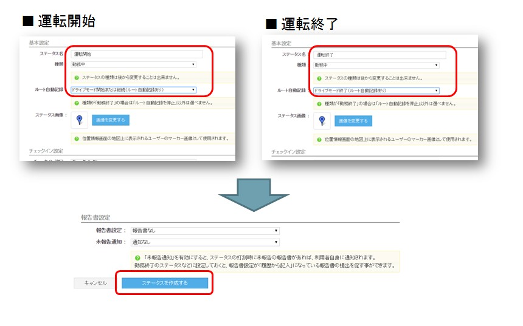
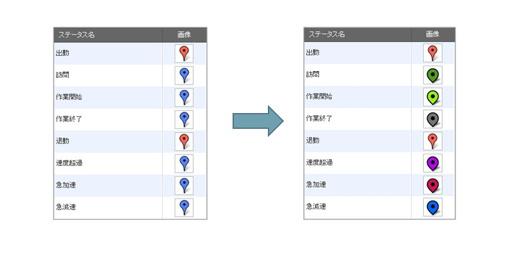
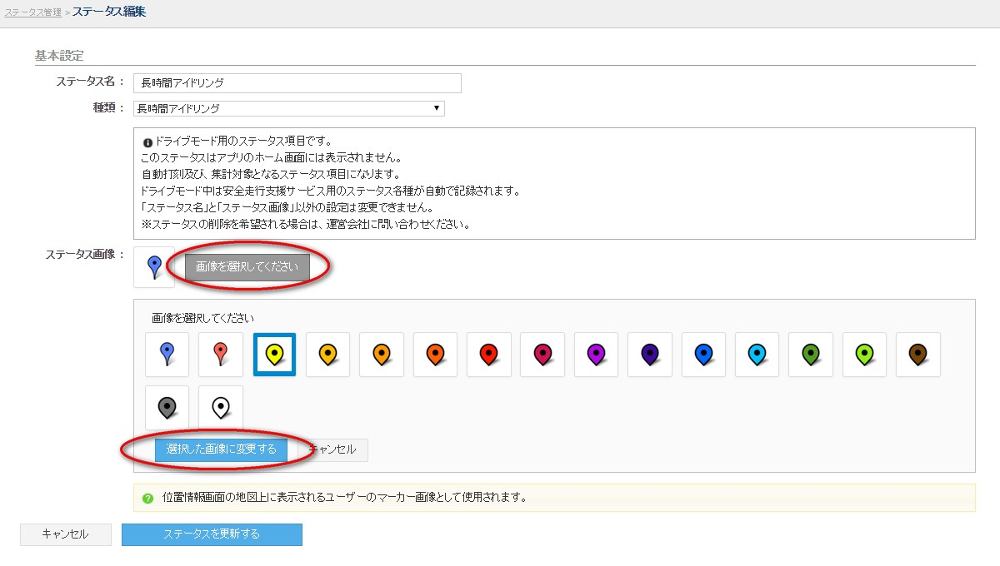
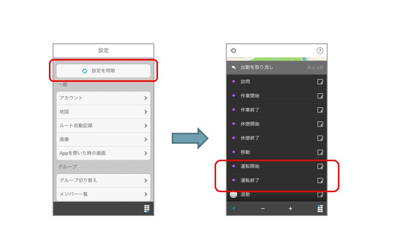
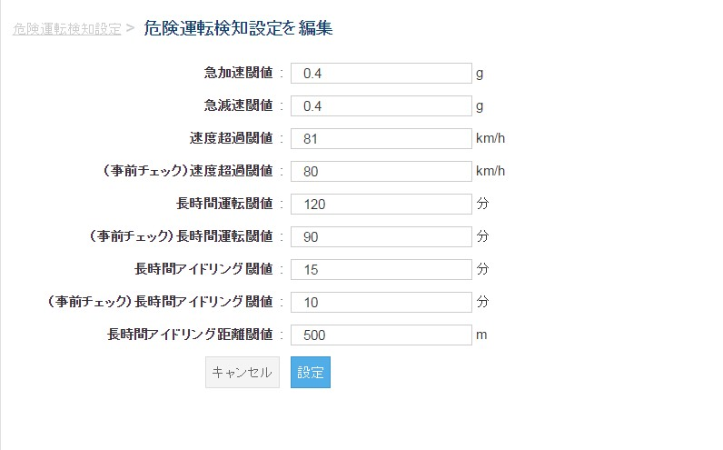

管理者の操作方法¶
ログイン¶
- ログインは こちらのページ からできます。
- ユーザー、グループ管理者の場合は、cyzenのアプリと同じアカウントでログインします。
- システム管理者の場合は、契約時にお伝えしたアカウントでログインします。

初期設定¶
ここでは初期設定の方法を説明します。
運転開始、運転終了を設定する¶
初期状態では、メンバーのアプリで運転データを記録することができません。
- 管理サイトのメニュータブから報告設定 > ステータス管理をクリックします。
- 画面下部の「ステータスを作成するボタン」から、運転開始・運転終了のボタンを設定してください。
Note
この操作はシステム管理者以外行うことができません。
Note
この設定を行うと、アプリバージョンv.3.4.4以前をご利用のユーザーが 打刻した際にルート自動記録が停止します。メンバー全員のアプリのバージョンを v3.4.4以降にした上で行って下さい。

- 運転開始
- ステータス名に「運転開始」を表す言葉を入力してください。
- ルート自動記録の欄を「ドライブモード開始または継続」にしてください。
- 「ステータスを作成する」ボタンを押してください。
- 運転終了
- ステータス名に「運転終了」を表す言葉を入力してください。
- ルート自動記録の欄を「ドライブモード終了」にしてください。
- 「ステータスを作成する」ボタンを押してください。
ステータスを見やすくする¶
- 初期状態では、メンバーのアプリで運転データを記録することができません。
- ステータス画像を変更して、とっさに区別がつくようにします。

- 管理サイトのメニュータブから報告設定 > ステータス管理をクリックします。
- ステータスの行の右端にある「編集」ボタンを押してステータスを編集します。
- 編集画面の「画像を変更する」ボタンを押して、画像を選んでください。
- 「ステータスを更新する」ボタンを押すと更新できます。

スマートフォンアプリで利用する¶

メンバーのスマートフォンアプリ上で利用するには以下の操作を行います。
Note
システム管理者が設定を変更した場合、必ずアプリケーション側でもこの操作を行ってください。 ただし、1日以上経過すると、自動的にアプリケーションにも反映されます。
- アプリの設定 > 設定を同期をタップします。
- ホーム画面に移動すると「運転開始」「運転終了」が表示されるようになります。
運転を開始する時には「運転開始」ボタンを押します。 運転を終了した時には「運転終了」ボタンを押します。
アプリで運転を開始した時点から、運転データの記録と危険運転検知を開始します。
危険運転検知設定を調整する¶
- アプリで検知する危険運転判定の値を管理サイトで調整できます。
Note
この操作はシステム管理者以外行うことができません。
- 管理サイトのメニュータブから安全走行支援 > 危険運転検知設定をクリックします。
- 各設定値が表示されます。ページ下部の「編集」ボタンをクリックします。
- 各設定値を調整したら、「設定」ボタンをクリックしてください。
- 変更後にアプリケーション側で 同期 を行って下さい。

| 項目 | 説明 |
|---|---|
| 急加速閾値 | 急加速と判定する 加速度 を、G値 で設定します。 |
| 急減速閾値 | 急減速と判定する 減速度を、G値 で設定します。 |
| 速度超過閾値 | 速度超過と判定する時速です。端末で通知を出し、サーバーにデータが送信されます。 |
| （事前チェック）速度超過閾値 | 速度超過と判定する時速です。端末で通知を出します。 |
| 長時間運転閾値 | 運転開始から運転終了までの分数が、ここで設定した分数を超えると、端末で通知を出し、サーバーにデータが送信されます。 |
| （事前チェック）長時間運転閾値 | 運転開始から運転終了までの分数が、ここで設定した分数を超えると、端末で通知を出します。 |
| 長時間アイドリング閾値 | アイドリング判定に利用する時間です。 この時間内の移動距離の合計が「長時間アイドリング距離閾値」以内であれば、端末で通知を出し、サーバーにデータが送信されます。 |
| （事前チェック）長時間アイドリング閾値 | アイドリング判定に利用する時間です。 この時間内の移動距離の合計が「長時間アイドリング距離閾値」以内であれば、端末で通知を出します。 |
| 長時間アイドリング距離閾値 | 上記アイドリング閾値と組み合わせて利用します。ここで設定した距離しか移動していない場合、アイドリングと判定します。 |